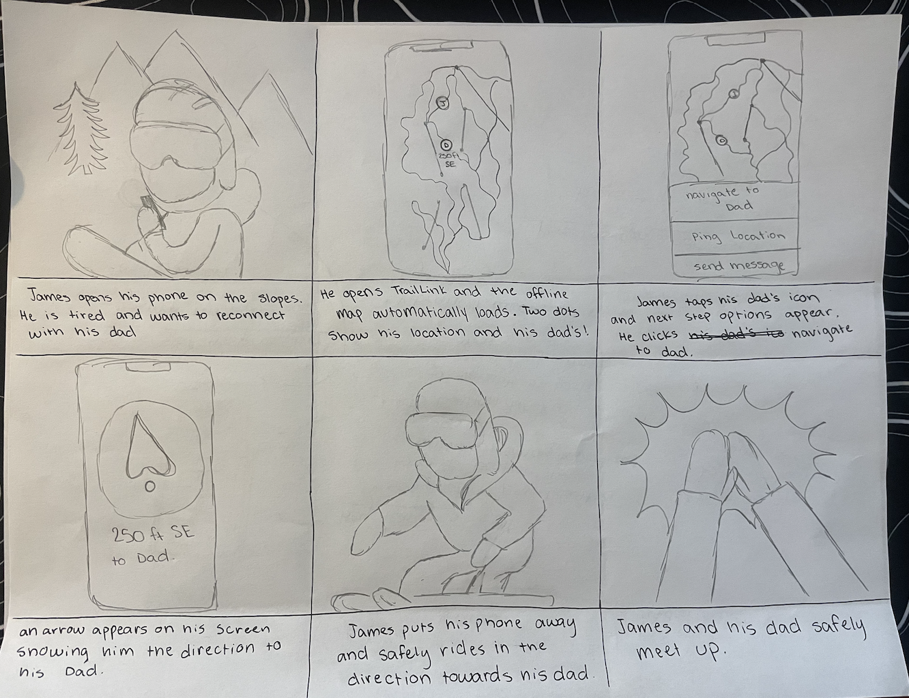

Project Overview
TrailLink is a mobile application designed for outdoor recreation safety for groups. Users begin by forming a group in the app. TrailLink relies on blutooth connection to pair users together within a certain radius. Members of the same group can view a map with their location and the relative location of other users in the group. As users wander further from the group, the group members recieve notifications with the user's last pingged location. If a group member runs into trouble, they can utilize the emergency SOS button that sends alerts to all members of the group. This app is designed to maintain safety for people when engaging in outdoor recreation activities such as snowboarding and skiing, hunting, hiking, and camping.
This project documents the jounrey I took from finding a broad general problem to narrowing it down to one particular project idea through user research.
The Problem
User Group
People in rural areas tend to struggle with certain aspects of communication due to some of their technological limitations that come with living in these rural areas. People like farmers, small business owners, or even just lower income communities struggle to efficiently and effectively communicate with each other over these large areas of undeveloped land. While this may be a day to day problem for them, many other groups like local governments, tourism resorts, telecommunication service providers, and even the military can still run into issues with communication in these areas.
Problem Space
According to the National Telecommunications and Information Administration, one in five U.S. households do not have access to the internet. This is often due to the unequal infrastructure between rural and urban areas. Furthermore, the cost to access telecommunication is expensive and is a large contributor to lack of internet access for low-income families and individuals. Many individuals without access to telecommunication services often face trouble with education, health care services, emergency response, and social connectivity.
In the new digital age, many services rely on internet access. Individuals who do not have proper access to the internet do not have access to essential online education platforms, telehealth appointments, and emergency response services. In order to obtain these services, some individuals may have to travel to obtain them, which may not always be an option. Furthermore, in rural communities, individuals may struggle with social connectivity. Oftentimes, they do not have quick, feasible social access that many people do in urban areas. This lack of connectivity can lead to feelings of isolation and poor mental health. Lack of feasible communication can affect more than just the individual. Entire communities may face economic struggles because they cannot fully participate in modern e-commerce habits such as online financial planning platforms, online sales, and more.
By improving the unequal internet access of individuals, several Sustainable Development Goals are met. The main goals are SDG #10: Reduced Inequalities and SDG #9: Industry, Innovation, and Infrastructure. By addressing these goals, SDG #3: Good Health and Well-Being and SDG #4: Quality Education are also met.
Impact
By addressing this problem, we can improve lives in several ways. First, we can strengthen access to education for low-income families or persons in rural areas. Furthermore, we can improve the health and well being of individuals by providing access to telehealth services and feasible emergency response. Likewise, by improving social connectivity, people can reduce feelings of isolation and in turn, improve mental health. Lastly, by addressing this problem, we can improve the economic success of individuals, businesses, and communities.
Research
Goal
The goal of this study is to identify areas of improvement for persons in rural areas that may face difficulties tied with a lack of communication. In this research, we want to dive deep to understand how these problems may affect their day-to-day lives including sociability, education opportunities, business operations, and connectivity. Through this research, we hope to gain valuable insights to improve communication accessibility in rural environments.
User Research Data Collection and Analysis

Insights
Planning ahead is essential
Based on our interviews, we found that all of our participants noted they have to plan ahead in order to work around the lack of digital connectivity. P1 particularly noted they need to plan ahead mostly for school. They ensure that all of their study materials (lectures, notes, etc.) have been downloaded ahead of time if they plan on working off-campus. P1 also noted they have made personal routines for checking their messages and uploading their work around when they have the best access to wifi or cellular. Likewise, P4 stated they also download important material to access offline when they have reception or wifi.
Our participants also stated that the lack of cellular connectivity takes away spontaneity in lives.
P3 notes that she cannot decide to go on a hike without any pre-planning. Before each hike, she has meticulous plans laid out for safety such as downloading maps or alerting friends of her whereabouts. On the other hand, P2 stated they cannot be “on-call”. All of their meetings have to be planned out, they cannot pick up the phone and join a meeting as they come up if they are home.
Safety is compromised in remote areas
Most of our participants noted the lack of safety they feel when they do not have access to phone calls. Poor connection poses safety risks to both residents in low-connection areas and recreational users of remote areas. Due to this lack of connection, our participants have to invest in costly technologies for reliable digital connection.
P3 in particular noted that she has a Garmin satellite messenger to help her call for help if she gets lost or gets injured. On the other hand, local residents like P2, stated they sometimes feel weary about needing to call for an emergency only to not have cellular or connection to call for help. The inability to call for help is a large risk posed on our participants.
Non-Reliable service has created barriers for work and education
Work and education are the forefront of our participants' lives. They either rely on digital communication for work and life or for education. Students and workers cannot rely on their connection for asynchronous communication. These barriers force them to plan ahead and find many work arounds.
Both P1 and P3 experienced outages during a timed assessment or interview. This forced them to find a work-around. On the other hand, P1 noted they sometimes have to go out of their way to do work on campus because they have unreliable network connection in their apartment. P2 stated, they usually have to go into town or into work in order to take video calls because their connection at home is usually too poor. This can be difficult for our participants because oftentimes, professors and colleagues naturally assume they have consistent and reliable access to the internet.
Connectivity is heavily influenced by environmental factors and location
Connection is not always reliable. Reliable connection can vary from location to location or from day to day. For example, your connection may be immaculate in the city or more urban areas, but when you go to the mountains, it is often patchy. On the other hand, you may live somewhere where your connection is reliable; however, when a storm comes through, you may experience unreliable connection. Sometimes, you may have to simply step a couple feet or drive to the end of your driveway to get a better connection.
Many of our participants expressed their disgruntled opinions about the inconsistencies of connection caused by weather or infrastructure. For example, P2 lives in an area where they rely on StarLink for connection. When the weather is poor, their StarLink is often poorly affected. These inconsistencies often force our participants to change their locations in order to find a stronger connection.
Digital Communication is value and important in people’s lives
Through our interviews, we have seen how digital communication is important and values in people’s lives. In today’s modern age, many people rely on digital communication to maintain relationships. People enjoy the use of digital communication for long-distance communication (i.e. keeping up with friends and families who live far away), real-time news updates, and entertainment. Despite the challenges people in remote areas face, they value the ability of digital connectivity in their modern lives.
We have also seen how the lack of Digital Communication is important in some of their lives. For example, P2 stated, when he is home from work, his lack of connection keeps him from mindlessly scrolling on his phone because he gets annoyed with long load times. This lack of phone usage at home allows him to spend more time with his wife and value his home-life. Additionally, he stated that since he cannot work-from-home, he can fully separate work from home; consequently, allowing him to have a healthy work life balance.
People rely on physical tools and alternative solutions
When digital communication goes out, people are forced to find alternative solutions. These solutions are often physical tools or alternative technologies. Using these tools help maintain communication, ensure safety, and assist with work and education. Our participants noted they use offline editing tools such as cloud syncing to assist with their education and work. On the other hand, P3 stated she downloads maps of her trails offline to ensure she has a backup solution in case her digital solution (phone) goes out. Other participants noted they use cables or landlines to stay in touch and communicate with people digitally.
Persona: James White
James White is a student at James Madison University. They grew up in the Harrisonburg area their entire lives. His parents are both professors at JMU. They live near Massanutten Resort, about 25 minutes from campus. He moved on campus his freshman year and has lived in an off-campus apartment since. He is in his Junior year at JMU and is studying Finance in the College of Business. Growing up, James spent a lot of time outdoors hunting, hiking, snowboarding, and more. He does not like to spend his time sitting around. He is very high-energy.
James hopes after graduation, he can work in the stock market analyzing current trends. He enjoys the high-intense workspace it provides. He hopes that he can live in a big city for a few years after college and the retire on a farm with his wife and build a family. He is currently a strong student, earning A’s and high B’s on average. He hopes to maintain his grades while also spending as much time as he can in the Shenandoah Valley, his home, before he moves to the city.
James feels that since being on campus, he has had much better success with his academics. When he was in high school, he faced COVID for a year and a half. During this time, he was forced to do his educational work remotely. While he enjoyed not having to sit in his school all day, he noticed his grade start to drop during this time. He was not able to attend every class because of his poor connection due to where he lived. He also felt that he had to rely on digital communication to maintain any friendships. When connection went out, he struggled with not being able to talk with his friends or play games with them online. On the other hand, he was able to spend a lot of time outdoors. The COVID time period helped him connect with the outdoors. He often went hiking and snowboarding with his dad when they had the chance. His biggest struggle would be when he and his Dad would go snowboarding, they sometimes got split up and they did not have a reliable connection to find each other; instead, they often would ride around and hope they ran into one another. James stated he doesn’t like riding by himself because of the high-risk his sport poses and if he or his father were to be hurt, one of them should be with the other to help.
Product Requirements
- The product must allow the user to have GPS accessibility despite connection.
- The product must allow the user to be able to send an SOS/emergency alert.
- The product must allow the user to download material to access offline.
- The product must seamless sync between online and offline mode without user interaction
- The product must be weather-resistent for use in recreational activities.
- The product must be an affordable solution that is similar in quality to competitors
- The product must include physical instruction and protocol that works in conjunction with its digital tools.
- The product must hold a reliable battery life of around 24 hours per full charge
Investigating the Solution Space
Product One: AllTrails
AllTrails is an app for trail-users to be able to download maps to help navigate remote areas offline. This app is wonderful for users of all types (bikers, hikers, walkers, etc.) to find trails of all difficulty, terrain, and length.
AllTrails works by allowing users to browse various trails with filters. From these search queries images and descriptions of the trails are provided. If the user is on the free version, they are limited to a basic trail search, saving trails in a favorites list, and limited navigation. Paid subscribers are able to download offline maps, enable “wrong turn” alerts if they go off the trail, live sharing of activity, and advanced map features. AllTrails allows users to track their trail-use progress and connect with other users.
Limitations
- Lack of SOS emergency button: While AllTrails does have a live sharing feature, it does not give the users easy access to send out an SOS signal. This feature is important because it can alert authorities of emergencies and collect the coordinates of the emergency.
- Online/Offline Syncing: In order to download maps offline, AllTrails requires you to pay for the upgraded version. Safety should not come at an additional cost. Furthermore, AllTrails requires user interaction in order to shift from online to offline.
- Focus: The main focus of AllTrails falls into recreational sports such as hiking and biking. The apps focus in very limited and does not open up to offline productivity workflows.
Product Two: Slopes
Slopes is an app targeted at snow sport enthusiasts (skiers, snowboarders, etc.) who want to track their time on the mountain. Users can track their speed, distance, vertical, runs, and so much more. If users are in a remote setting where connectivity may lack, Slopes is able to seamlessly transition between online and offline without user interaction. Users can also share their location with friends on the app.
Before the user goes out on the mountain for the day, they hit the record button. From there, the app tracks all of their runs without any user interaction needed. The app stores their stats including slopes, top speed, average speed, distance, etc. The user is able to use interactive maps to view their runs throughout the day with timestamps and view the resort maps. Users are also able to share live locations with friends.
Limitations
- SOS emergency button: Slopes offers an easy to call ski patrol however, this redirects the user to their phone app. There is no built-in SOS emergency procedure.
- Location: Slopes are only optimized for ski resorts and do not provide services to other users such as hikers that may be located in other, remote/backcountry areas.
- Focus: This app is dedicated for recreational mountain sports and not for other areas of productivity.
Product Three: Apple Maps
Apple maps aids users in navigation by providing routes for driving, walking, and public transit. Users are able to see route options, estimated travel times, and traffic conditions.
In order to use Apple Maps, a user puts in two locations: starting location and end locations (with an option to add stops). Users have the options to avoid tolls, highways, etc. Apple Maps then generates one to three routes a user can take with estimated travel times. A user chooses their route and Apple Maps begins navigation. Voice instructions tell the user where to go without looking at their devices while driving. Furthermore, a map is generated with the users current location and the route they need to take highlighted in blue.
Limitations
- Accessibility in remote locations: In order to use Apple Maps in remote locations, users have to open the navigation while they are in service. If the user is in a remote location and they stray from the provided route (oftentimes by missing a turn) Apple Maps will not be able to reroute them without connection to wifi or cellular data.
- SOS and Emergency Alerts: There is no emergency button provided in Apple Maps. In cases of emergencies, users must use the standard 911 call which is only available with connectivity.
- Affordability: Apple Maps is only available to IOS users. While the app itself is free, Apple/IOS products are often much less affordable than android.
Product Four: Google Workspace
Google Suite is a web and mobile product that allows online and offline editing of documents, spreadsheets, forms, etc. Users utilize Google Workspace for work, education, and collaboration. Users can create, share, edit, and store documents with real-time updates.
Google Workspace stores all of the documents in cloud storage to allow for accessibility anywhere. When a user edits offline, their edits sync immediately once online again. Multiple users can collaborate on a document/file at a time allowing for seamless group collaboration. Google Workspace also integrates with many other apps such as Google Calendar, Gmail, and other third-party applications.
Limitations
- Navigation Assistance: Google Workspace does not provide users with an ability to track location or utilize maps.
- Offline Syncing for Large Files: If a user needs to access a large file, offline syncing may make this process slow or not possible.
- Outdoor Recreation abilities: Google Workspace does not have any features for outdoor recreation activities such as trail planning.
Product Ideation
Product Ideas

Chosing a Product
What issues in the problem space are well-responded to by existing solutions?
Safety In Remote Areas
According to our user research, we found a common concern between users: feeling unsafe because they cannot call for help or share their location. Our product should ensure our users can alert authorities in unsafe scenarios as well as feel safe in remote areas by use of location sharing and navigation.
Offline Access and Planning
Many of our potential users stated the ability to access material offline and plan ahead by downloading materials early is very important for the function of their day-to-day lives. Our product should support our users both online and offline to ensure they can transition from online work to offline work without disrupting day-to-day activities.
What is missing from the solution space?
No solution combines all core needs into one product
Our users stated they need a solution to several problems: safety in remote areas, online and offline communication, offline access to work and education, affordable products, automatic syncing, weather resistant, and more. No solution combines safety, productivity, and communication into one, viable product. Many of our tools only address one problem. For example, safety and navigation tools do not help with offline access to work and school. Likewise, educational tools do not help with finding someone outdoors. A solution to address all of these problems would be a hybrid device that integrates navigation, emergency support, and offline productivity.
Lack of affordable and accessible options
The problem we want to address is the lack of connectivity people experience in remote areas. According to past research, the people living in remote areas are often people of low income. Thus, it is important to provide a solution that is affordable to our main audience. Many of the solutions we provided are expensive or not practical for people in rural/low connectivity areas. A viable solution would be a low-cost, multi-functional device for students and outdoor recreation.
Seamless Online-Offline System
When users may find themselves in an area with spotty connection, they will want their product to seamlessly transition from online to offline mode without disrupting the user experience. Most products do not fully address automatic syncing when service returns or goes out. This lack of problem solution tells us we need to provide users with an automatic online/offline syncing for safety, communication, and productivity.
Brainstorming Session Process
Our brainstorming began with the conceptualization of ideas during I3. In I3, we created five unique design ideas that address the challenges ideated during our user research. We then took these sketches and discussed them together.
Our session began with laying all of the ideas out on the table so we could visualize them at once. This was beneficial because we were able to see our repeated themes such as safety, offline access, planning & organization, etc. We were also able to differentiate between our technological and non-technological solutions. Likewise, we were able to decide if ideas may be “edgey” or unconventional.
Next, we created an affinity diagram using sticky notes. We started by clustering our related ideas together and assigning a common functionality between them such as Safety and emergency communication, offline productivity, etc. This helped us organize our solution space to help us understand what problems we addressed and lack thereof.
We then looked at our blind-spots. In order to do this, we looked back at G2. We wanted to refamiliarize ourselves with the problems we conceptualized from our user research. Next, we took note of the problems we barely addressed or did not address at all. We then organized our unconventional or “edgy” ideas. These ideas include the morse-code messenger keychain, drone-based message delivery, and physical planner.
In our discussion we noticed many existing tools focus on emergency SOS; however, this is oftentimes, hardware based which can cause the solution to be more expensive. Likewise, many products focused on either safety or academic work but not both. As well, no solution supported communication without cell service.
Selection Criteria
During our discussion we evaluated each idea based on four criteria:
- How well it matches our person’s most urgent needs
- Feasibility of production
- Ability to address a blind spot from the solution space
- Creativity and originality compared to existing solutions
We came to our final selection by addressing our strongest and most original ideas centered around short range communication, staying safe in remote areas, and not relying on cellular or wifi connectivity. We pulled our most promising components from each idea into one focus app for phones.
Chosen Product: TrailLink
TrailLink is an application for phones that allows groups to stay connected, share location, and send messages without cellular service using short-range connectivity. We decided that it was important to address one critical issue well rather than address many issues poorly. TrailLink focuses on one issue: “People feel unsafe or anxious when disconnected in outdoor or rural areas, and there are no affordable tools that help them stay connected to their group when there is no service”.
How TrailLink Works
Short Range Connectivity
Phones can connect via bluetooth for short range connection between one another. Likewise, if available on the device, short-range radio features can be permissible. This creates a private “bubble” for groups in a common area. Groups that may benefit from this feature include but are not limited to: hiking groups, ski groups, families, and friends. This feature ensures that no wifi or cellular connection is required to stay connected with your group.
Live Group Map
As the user treks through remote areas, the app downloads an offline map of the relative region. Users can use this map to view their location, the last known ping of their friend’s location and the distance & direction to each member. A feature included with the map are separation alerts. Users can set a radius of distance between one another. If someone leaves this radius, the other members receive a notification alerting them of their partner outside of the radius.
SOS Emergency
This SOS emergency button avoids the complicated and expensive hardware often required for SOS services. When clicked, this button sends the connected group members a distress signal and the last known GPS location.
Tasks
Form a Group
When the user opens the app, they can create a group with other users and invite nearby users to join. Their phones connect via bluetooth to form a short-range network. This is important because it addresses Jame’s primary goal: “I want to stay connected to people when I am outdoors- even if there is no cell service”. This task is important because in order to use the features TrailLink offers, users need to be a part of a group of two or more people.
View Real-Time Locations of Group Members
Users can view an offline app of their last pinged location and the last pinged location of their group members in a relative location. This is an important feature to the overall functionality of the app because it helps users not get separated and if it does so happen that users get separated, they have a way of finding the other members. This provides users with more reassurance, reducing anxiety levels. This supports James' desire for safe outdoor recreational sports so if he gets lost from his father, they can easily track one another.
Receive Separation Alerts When a Group Member moves out of Range
When users form a group, they can establish a range distance. If a user leaves this radius, an alert is sent to all group members. This alert will show the last-known location and time as well as the direction and distance to said location. This is an important feature because it reduces the risk of being stranded alone without connection. Furthermore, this give real-time awareness without the user constantly having to interact with the application
Send Offline Messages Within Group
When users are separated or not in vocal range, they can send quick texts for updates to other users. These messages transmit view bluetooth without needing a cell signal. This is beneficial to users because it enables communication in low-service areas and improves overall safety.
Send an SOS Broadcast to the Group
In some situations, users may become too lost or succumb to injury. In these cases, it is important for users to be able to send a distress signal. This distress signal goes out to all members of the group and includes the last known GPS location and the direction + distance they are. This is important for users because it addresses safety first.
Storyboard
Low-Fidelity Prototype